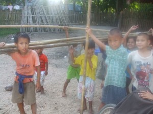
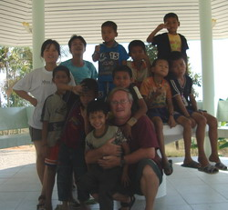
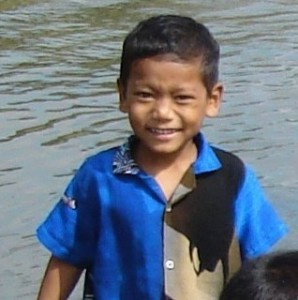
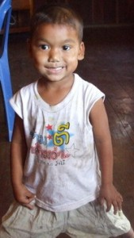

Village Life with Burmese Kids


A lot has been written and can still be said about the recent history of Burma. As a nation, it is still not whole, having been ripped asunder from its Asian womb by the twin would-be empires of Great Britain and Japan. One robbed Burma of its royal beginnings, ending the rule of its last true king, and the other instituted its present form of government — one of military fascism modeled after the conquering Japanese army of World War II. Neither wound inflicted upon Burma has completely healed and it is still searching for its soul as a nation. The kids I met living on the border areas between Burma and Thailand are the future of that part of the world — although neither country realizes it yet. I left the kids busy building their new house and learning how to live together as a community. They will be busy for many years — having chosen to cast their lot with Thai villagers, trying to fit into a society that gives them a little more than they can get at home in a nearby Burmese border town. It is a precarious balancing act between two opposing and sometimes xenophobic cultures — I can only wish them further luck. I have practiced this balancing act on a bicycle for many years now as I have wandered. It never gets any easier. I have scars from all of my ‘crashes’ and many of the Burmese kids I taught to cycle do as well. Life says if you fall down, just get up and try again!
I arrived in Thailand in February 2006 — having chosen, at the last moment in Taiwan, to change my employer from a school in Inner Mongolia, China to one in the warmer environment of the western Thai countryside in the border town, Mae Sot, known locally as Little Burma. I had caught a bad winter cold from the smog that drifted 60 kilometers northwards from Taipei to the seacoast town where I worked. I feared that the town in inner Mongolia would also have the same problem with air pollution as so much is coal is burned during the winters there to keep warm that everyone ends up breathing in its dust. I opted for the cleaner air and bluer skies of Thailand. In retrospect, it was a choice I don’t regret. As a small boy, I was left outside to play in the cold by my mother. I don’t know if it was ultimately responsible or not for my health when younger. My mother told me I ended up in the local hospital as a young boy with pneumonia a number of times. So, I guess it is my final ‘healing crisis’ that may await me in the future. It is one that also seems destined for America — think ‘swine flu’ during the winter of 2009-2010. There doesn’t seem any way to avoid one’s karma other than dealing with it and working through it. No matter how far away in the world one runs away from the source of it, the lessons keep coming home. That is not to say that getting some distance from the source of one’s ‘inner malaise’ can’t but offer some degree of objectivity in dealing with its consequences in one’s daily life.
My first six months in Thailand were spent in settling into a new job, teaching English to kids from the kindergarten level to grade 5. I never had more than 100 students to teach — I don’t think a teacher should be asked to ever cope with much more than that number. The job and education itself becomes an inhuman process when the numbers climb any larger. As a firm believer in ‘home-schooling’ I can only cope with the workaday world by finding a situation as close to an extended family as possible. Nothing else works. At first, I lived in a large Thai farm house near the school. It was owned by a Thai policeman and I shared it with a fellow teacher, the Burmese language teacher at the school. We were amidst a tiny village only a kilometer from the Friendship Bridge that crosses the Moei River into Burma and the little Karen town of Mywaddi. Our neighbors were mainly Thais and a Buddhist hermitage was situated across the road from our side gate. The school where I worked had a mostly Thai population of 1700 students but among the 100 or so students I had to teach there were a lot of Chinese and Burmese kids as well as a sprinkling of kids of mixed parentage — one Thai mother or father and a marriage partner from a foreign country (Turkey, Germany, India, France, Burma, etc.). They were always the best students! Of course, the school I worked for was a good Catholic institution — one that offered a ‘sound’ education and that supported other schools in the mountains of Thailand for ethnic Karen students. It still remains a good school. My house mate, the Burmese teacher, a Christian and named Francisco, had lost his family to the movement for democracy in Burma. He told me a lot of interesting stories and helped me fill in the spaces in history between the British colonial past and the present day Burma. Not that Thailand doesn’t also have a respect for ‘martial’ discipline, or at least the appearance of it. It’s the only country that I’ve worked in where government teachers have military uniforms and can earn medals for teaching. That’s not me, although I’ve come to respect that tradition to an extent. The Japanese army of World War II doesn’t have my respect — they lost that original ‘Samurai’ spirit somewhere along the way. The Thais haven’t lost it but don’t take it so seriously yet — only a Thai Buddhist monk would understand that ‘inside’ joke about warriors and their so-called ‘virilism’.





I observed many Burmese street kids surviving on their own from day to day in and around Mae Sot. Some of them hung around the entrances to local shops, like the 7-Eleven’s, or other tourist guesthouses and restaurants, where they would beg. It’s not an unprofitable occupation — even for a kid — who sometimes can earn up to 300 baht a day. Others carry trash bags and go from waste bin to waste bin, collecting plastic bottles and bags. They, in turn, sell this recyclable waste for enough food to eat each day. Many of them have no place to call home at night. Some I met lived under the Friendship Bridge itself in plastic refuse huts built upon the banks of the Moei River — even entire communities of the homeless are situated there — often surviving on their own day-to-day commerce. (It seems many Americans are discovering this reality for themselves nowadays — they have my sympathy). Here I came face to face with a virtual “no-man’s land” and often wondered about the legalities or not of the border regions between nation states. After all, if the Moei River is the actual border between Burma and Thailand, what is the legal status, or not, of someone living on a boat in the middle of the river? I used to cycle along the river, discovering illegal border crossing points where customs was ignored for a small price paid to the boatman who helped the little trader get his goods across the river to be sold tax-free. Many second-hand cars and bicycles are purchased from Japan, make their way through Thailand, and end up in one of the riverside godowns for further transport into Burma where the vehicles and bicycles are refurbished and resold. A lot of oil tankers drive right up the river, often through isolated Thai villages, to an oil depot built on the river bank. A simple pipe then carries the oil across the river and into Burma. Not that Burma doesn’t have oil in offshore fields being developed by Thai corporations. It’s just that not much of that oil stays in Burma. It is more profitable for the ruling Burmese junta to export it as they also do with much of the food grown in the country. Local farmers have no defense against their food production being unexpectedly expropriated for government use. A lot of the Burmese living in Mywaddi actually buy their vegetables and other produce from across the border in Thailand and transport it across the river without bothering to go through customs.
After listening to Franscisco’s stories and talking with kids living along the river through his translations I came to understand how desperate a situation it was for some of these kids. I was raised as a poor kid myself and something in me resonated with their plight. When I was three, I lived in an old, cold unheated Virginia farm house without running water and with an outside privy. Later, I often played along the banks of the Moore’s Creek, in Charlottesville. Moore’s Creek is an open sewer, in fact. So, in Thailand, I decided to try helping some of these kids who reminded me of my own childhood. With Francisco’s assistance, we located a dozen or so kids who would be willing to try living in a shelter that I would establish for the group. We asked one of the kids’ moms to be the housekeeper and cook for this group. We rented a small apartment near the river. The kids moved in one afternoon and were moved out by the landlord the next morning. We had forgotten to figure in the local Thai neighborhood’s residents’ response to the shelter into the equation. We at least got my rent money back but the housekeeper absconded with one month’s food money back to her local village in Burma and the kids were back on the street. I was beginning to see how difficult it could be to change just one thing about any community or help even one other person not already in a social niche where he or she could be exploited by others. I rented another apartment and Francisco and I moved into it. Our neighbor was a rich Burmese and we thought we had a better chance there. My own landlord, a Thai policeman, had died and we felt a move was in order. We couldn’t just try helping the kids by turning them over to someone we would delegate responsibility to and pay. We finally collected a few kids who would traipse to our apartment each evening for a hot meal and a safe place to sleep. Other kids we had tried to help by giving money to had bigger kids beat them up and steal it. This was no easy task that we had set for ourselves. Our new apartment was, unfortunately, too close to a local Thai policeman’s house on a main road. The kids we had were discouraged from coming to our neighborhood most evenings. We decided to try one more time and I rented a small farm house in a village further downstream and in a more tolerant neighborhood. Francisco had also located a Burmese housekeeper to live in and take care of the kids while I was at school working during the day. Success of a sort, at last. The rest is history.


In hindsight, the group survived and thrived. I had made the correct decision to leave them to their own devices. Everyone survived the typhoon that struck Burma in May of 2008 while I was in northeast China, on the border of North Korea. I came back to Thailand after hearing about the typhoon. Other donors appeared, money arrived from anonymous sources for a building program and I was emotionally involved again — this time from a distance. I worked on the other side of Thailand and only made monthly visits to check up on the group. While work began on the construction of a new shelter on rented land in the village, the kids with a little adult help constructed a temporary and typical dwelling made of bamboo and tree leaves. It survived most of the monsoon of 2008 but the kids as often as not were wading in foot deep water and mud. The kitchen was a small pond when it rained heavily and the roof leaked. I will always remember sleeping on the floor of that hut, covered in mud, stung by mosquitoes but happier than ever before. I was only dreaming — the world wouldn’t let me come down to this. Everyone’s expectation of how to live had changed. Goals were set and fitting into the village community became more important for the group than following an old hippie’s dream. There was a lesson in all of this for me. Fathers (or wanna-be responsible individuals) should not try to live out their own dreams through others. I haven’t yet become a father so I can still consider myself as the real student in that situation. It was time to leave Thailand. I had originally come to Thailand as a student interested in learning about herbal medicine. In all the years between that first visit (1986) and the present, I had been trapped in the role of a teacher. It’s time to think about becoming the student again. I am now upon a shaman’s path and only lack for an assistant/teacher who can lead me to the next lessons. I want to go back to researching alternative medicine and health. Whatever the cost is — in suffering caused by emotional attachment to what one desires instead of accepting what is and learning to ‘let it be’ — IS the price of further spiritual growth. It is a small price to pay. Becoming a victim of circumstances and relying upon a higher authority — real or imagined — is a fool’s path. Some still choose it. At times, I feel tempted to surrender to it. We all need a rest from being independent and responsible for ourselves. An individual, no matter how strong he or she perceives himself or herself to be, still needs the support of friends, lovers, and others met in shared life experiences. I have become a pilgrim again, searching for the freedom I think I don’t have. Maybe, I am free, but just don’t want to admit to having to be responsible for others’ survival. Maybe, I am bored, and need new friends to play with. Only time will tell and the next move (either north or south — and I haven’t decided which it will be) may bring me to a place where I can express the freedom I feel in my spirit. I can only try — and it is in that trying — that I can realize further spiritual growth. Wish me luck, if you would, please!
Filed under: Thailand and
Leave a Reply